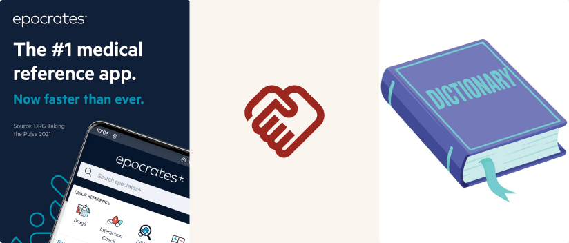
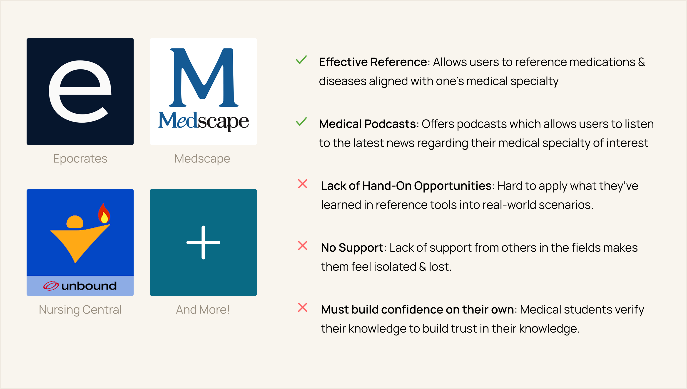
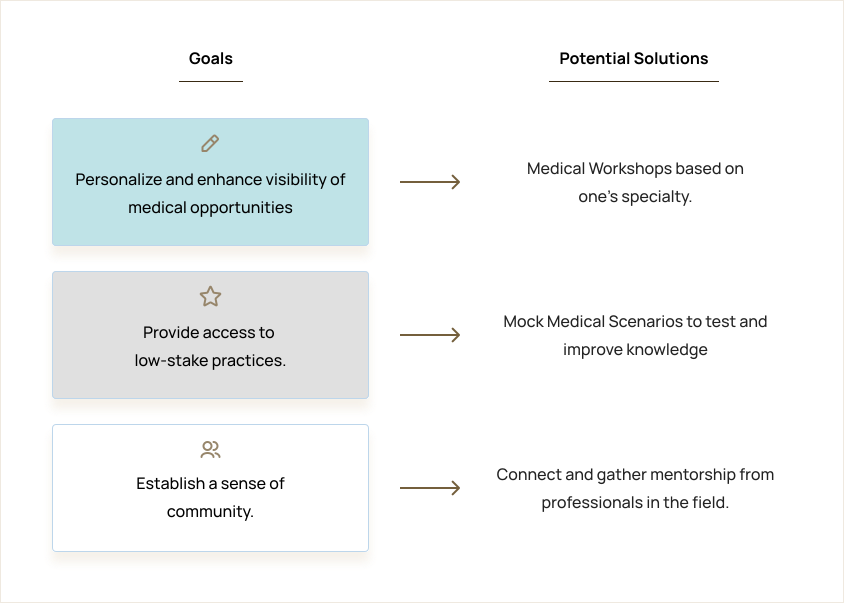
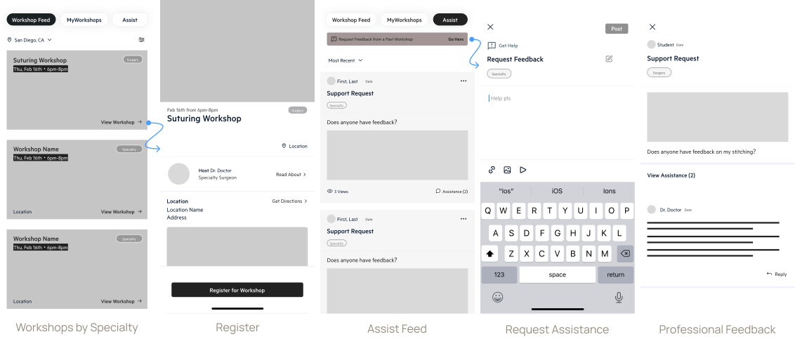
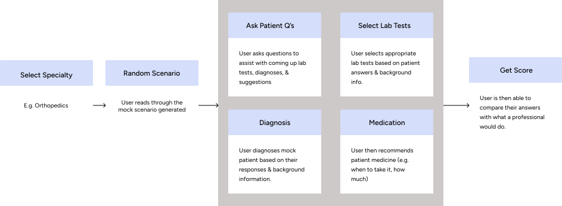
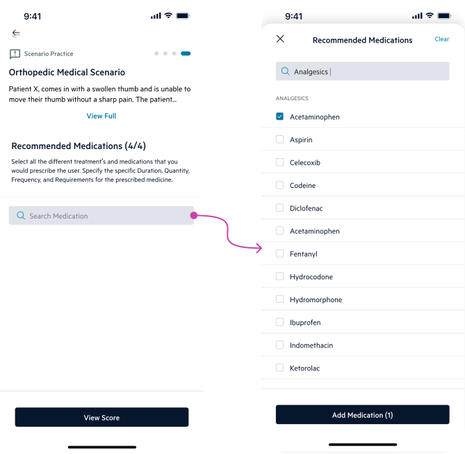
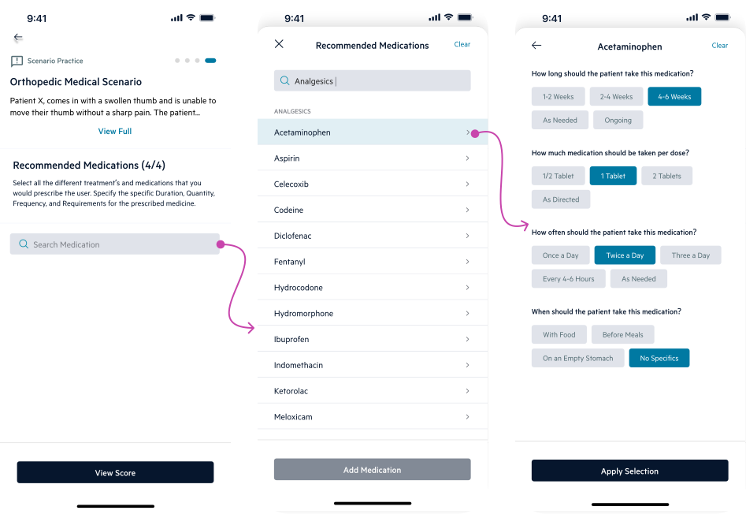
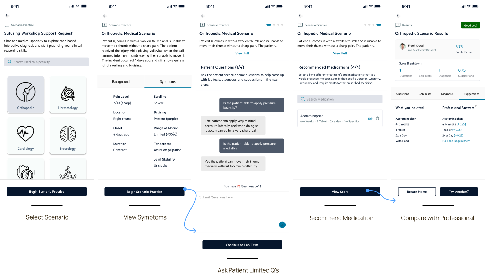

5/6 expressed the the solution is realistic & would provide users access to resources nearby to hone their skills & knowledge associated with their medical specialty of interest.

Enabling medical students to apply their knowledge through hands-on experiences and specialty-specific medical scenarios within the Epocrates platform.
Medical students struggle to apply their theoretical knowledge in real-world clinical settings, particularly in their specialties of interest.
Through in-depth interviews with 6 medical students, I identified a disconnect between the reference information provided by tools like Epocrates and the practical application opportunities available to students.
Epocrates is a mobile/desktop application used by over 1 million healthcare professionals that provides them with drug references, medical calculators, and more.
Epocrates is like a medical dictionary that provides quick, reliable drug and health information for medical professionals, students, and more!

Although there are many medical reference tools online, medical students need practical guidance for real-world clinical scenarios because passive knowledge lookup and limited opportunities to apply learning leave them concerned about their job performance and ability to provide quality patient care.
Medical students need guided practice applying clinical knowledge to realistic patient scenarios so they can build confidence in their decision-making skills.
Through interviews with 6+ medical students. I came across 3 common insights that users mentioned when it came their experience with finding opportunities to grow in their specialty.
“It is hard to gain access to opportunities to hone skills aligned with medical specialty. It requires a lot of networking and reaching out to even gain access to one opportunity” (kristine)
“I learn a lot in school & reference medical apps but I don’t feel reassured enough to be able to apply my skills in a real clinical setting aligned with my specialty” (gabriel)
“I experienced lack of emotional support when it came to starting medical school” (Jahan).
With this…
How might we extend Epocrates to help medical students gain better access to learning opportunities and hands-on experiences to build confidence in their medical specialty during clinical practice and future training?
After understanding the challenges medical students face in finding relevant learning opportunities and developing specialty-specific skills, I defined the following goals that align with user needs.
To match students with specialty-specific resources & quickly direct them to medical professionals.
To help students make clinical decisions and receive feedback that boosts their confidence.
To reduce the feeling of isolation and form of support system from other medical professionals.
While researching why the app is popular among medical students, I identified a key insight shared by 6 students in interviews.
Their motivation for using the app is to reassure themselves about dosing, contraindications, and interactions before patient encounters, exams, and many other real-world clinical settings.
Based on research on the Epocrates App, it appears that many medical students use these digital reference tools to confirm their understanding of medical terminology and help them trust their own knowledge base.
I took a look at products similar to the platform and discovered the following strengths and weaknesses.

During the ideation phase, I organized potential solutions aligned with the goals defined earlier in the process. Establishing these goals early on helped generate solutions that directly addressed the identified user problems.

Understanding the challenges of limited opportunities to grow in one’s medical specialty & the lack of support systems, I came up with the idea of finding in-person workshops and connecting them with the professional support they need.

In addition to workshops, I incorporated mock clinical scenarios to help physicians apply their learning in a low-stakes environment. This approach makes skill development more accessible while building both knowledge and confidence.

First, I asked users to search for medical workshops specializing in different areas. This task aimed to evaluate whether the filtering functionality worked effectively and whether the generated workshop recommendations were properly tailored to each user’s specific needs.

After completing a medical workshop, users can post their work for feedback from field professionals. This task aimed to identify which types of support would best help students develop their skills and build confidence.

In specialty-specific mock medical scenarios, users must recommend appropriate medications as part of their clinical decision-making. This task evaluates which design more effectively tests students’ medication knowledge and their ability to apply it in realistic clinical contexts.


Goal 1
Medical Students can filter medical workshops nearby by specialty and see the current medical professional hosting the event and the number of attendees going. This provides an opportunity to meet others in the community and form potential connections.
Goal 2
After a medical workshop, students can request feedback and insight from an experienced professional. This provides not only encouragement, but a lasting connection that could help them throughout the journey as a medical student.
Goal 3
Students move from theory to practice in specialty-specific clinical scenarios, where they diagnose mock patients, recommend medications, and evaluate their decisions with professional standards.

The medical students I conducted testing on emphasized that this concept would help them feel more reassured and supported throughout their education journey. I came across 2 findings from the final design concept.
5/6 expressed the the solution is realistic & would provide users access to resources nearby to hone their skills & knowledge associated with their medical specialty of interest.
If given more time I would work on more features that verify medical student status (such as an onboarding process) and conduct more research on constraints that might occur with medical workshops.
Thank you for reading!